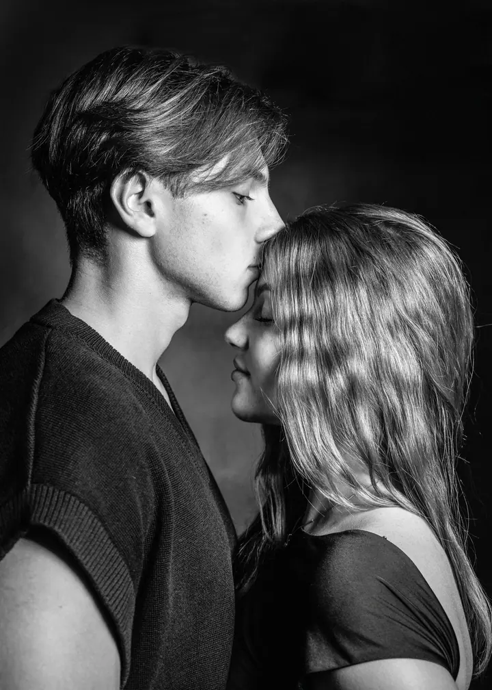
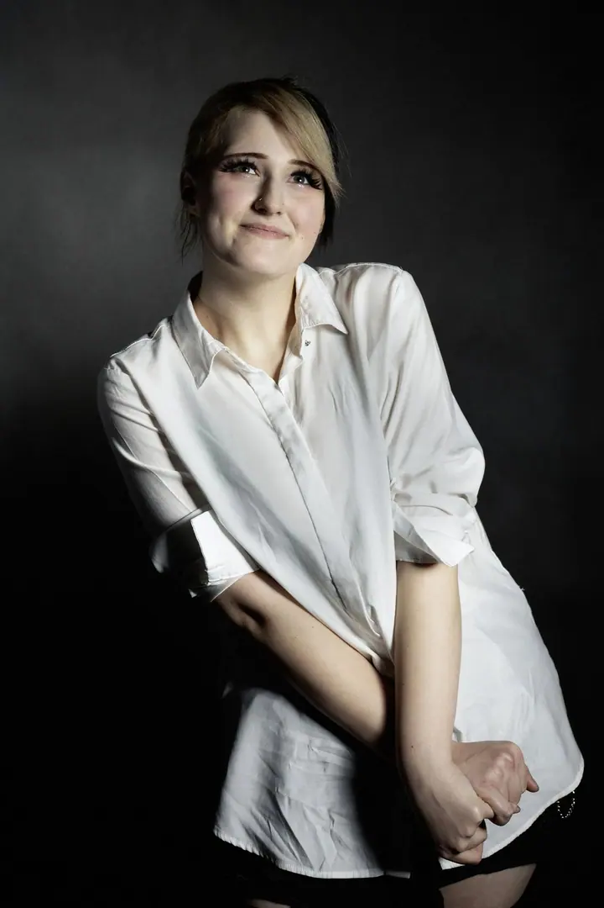

Ženský a emoční portrét
Citlivé portréty žen, které ukazují nejen to, jak vypadáte, ale i to, jak se cítíte. Často za mnou přicházejí lidé, kteří hledají cestu k sobě samým.

Portrétní a fine art fotografka
Jmenuji se Adéla Andersová a v ateliéru v Českých Budějovicích fotím portréty žen, rodiny i firemní fotografie. Inspirací jsou mi lidé a k focení přistupuji spíše intuitivně. Hledám obraz, ve kterém se odráží nejen to, jak vypadáte, ale i to, jak se cítíte.
Zeptat se na termín
Citlivé portréty žen, které ukazují nejen to, jak vypadáte, ale i to, jak se cítíte. Často za mnou přicházejí lidé, kteří hledají cestu k sobě samým.
Fotím rodiny s dětmi v ateliéru i venku. Chvíle radosti a blízkosti, které se stanou krásnou vzpomínkou na společný čas.
Siluety, doteky a tichá blízkost dvou lidí, kteří čekají miminko. Fotíme v klidu ateliéru, s prostorem pro vaše vlastní představy.
Fotím, protože věřím, že fotografie dokáže zachytit hloubku, něco, co zůstává mezi slovy. Inspiraci beru spíše z konkrétních lidí a teprve potom přicházejí nápady. Každá fotografie je pro mě cestou k pochopení člověka.
Zaměřuji se na inscenovanou fotografii s výtvarným přesahem, ženskou zkušenost a autentické emoce. Ve své autorské tvorbě vytvářím hlavně inscenované portréty s prvky performance a tělesnosti. Moje autorské fotografie si můžete koupit jako číslované a signované tisky.
Za svou tvorbu jsem získala pět ocenění v soutěži Czech Art Photo a nominaci na fotografa roku. V letech 2025 a 2026 jsem se navíc stala finalistkou soutěže International Photography Awards v kategorii fine art. Při focení s klienty je pro mě ale nejdůležitější dobrá atmosféra. Klidně si dáme kávu nebo čaj, popovídáme si o životě a u toho fotíme.
Termín si zarezervujete přímo na webu, kde najdete i podrobný ceník. Pokud chcete fotit venku, domluvíme se podle počasí a světla.
Fotíme v ateliéru v Českých Budějovicích zhruba 60 až 120 minut, podle toho, kdy budeme obě strany spokojené. Přijďte s vlastní představou, nebo ji najdeme spolu.
Z 30 až 50 náhledů si vyberete snímky, které vám jsou nejbližší. Náhledy jsou syrové fotografie, které teprve čeká úprava.
Vybrané fotky upravím ve svém autorském stylu a předám vám je v digitální i tištěné podobě.
Doporučuji oblečení bez potisků. Jinak nechávám všechno na vašem stylu.
Neupravené fotky neposkytuji. Úprava je pro mě podobná jako kdysi vyvolávání ve fotokomoře, a tak si chráním svůj autorský styl. Kdybych se do vaší představy netrefila, určitě se domluvíme na dalším postupu.
Ateliérové focení vychází podle náročnosti na 1 000 až 3 000 Kč. Podrobný ceník najdete v rezervacích na webu.
Ano, na webu si můžete koupit dárkový poukaz na focení.